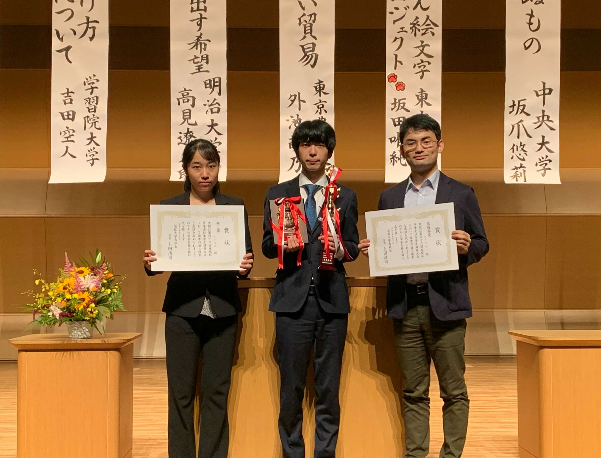
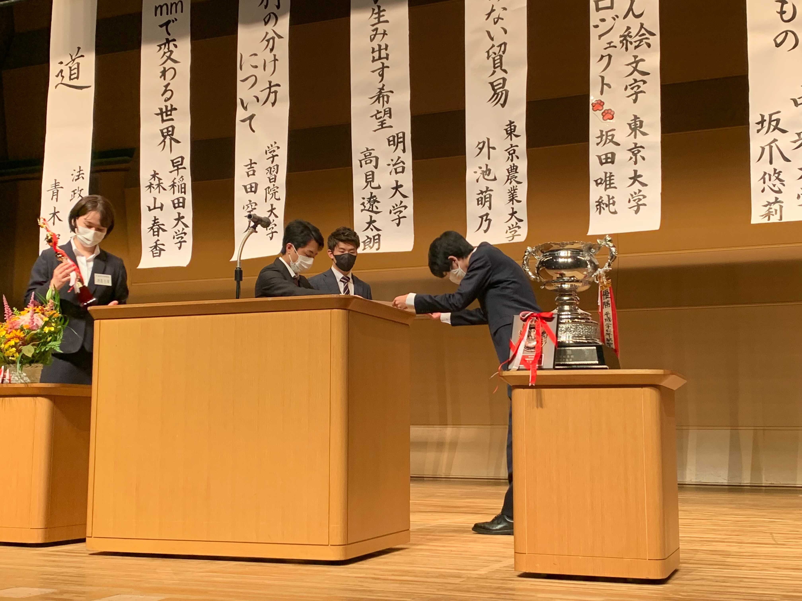
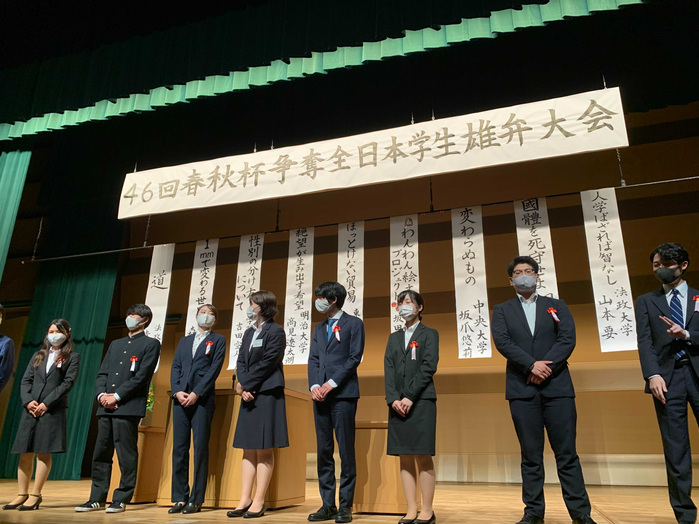

7月10日(土)に国立オリンピック記念青少年総合センターにて開催されました第46回春秋杯争奪全日本学生雄弁大会に、弊部より坂田弁士(130期)が出場しました。 坂田弁士は「🐶わんわん絵文字プロジェクト🐾」の演題のもと、アイデンティティを選択しない余地を設けることの重要性を訴えました。厳正な審査の結果、最優秀賞(聴衆審査員賞)および第三席(審査員による審査)に輝きました。 主催の法政大学弁論部様をはじめ、大会関係者の皆様に厚く御礼申し上げます。   